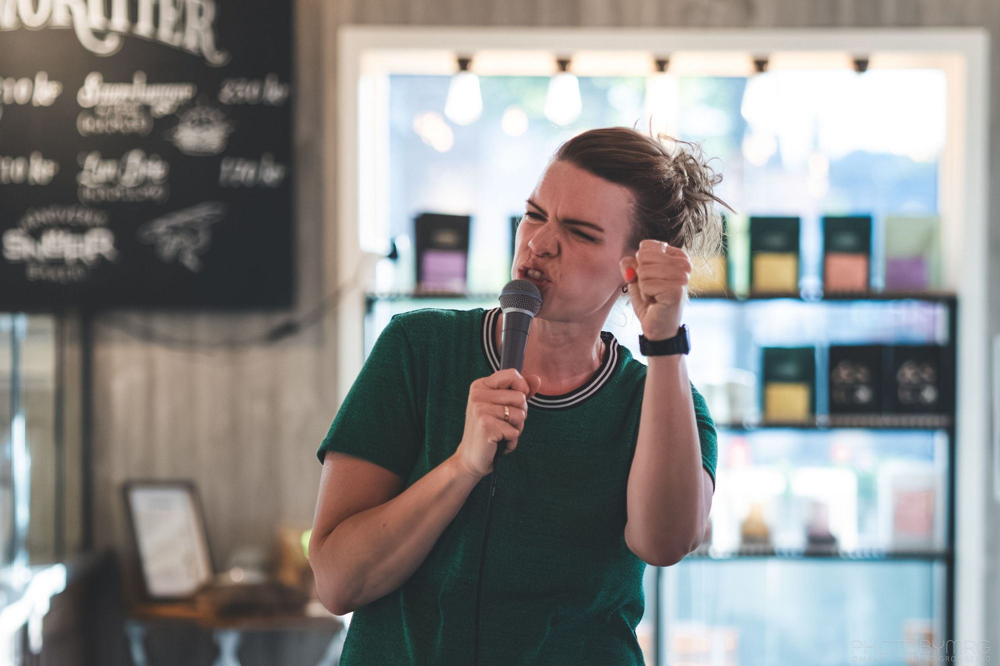

«TUSEN TAKK for fantastisk underholdning. Altså, for et multitalent!!»
Bilder fra det lette førsteshowet - #Egentid



Foto (bildet med grønn genser): Marte Ramberg Grongstad. [Legg inn fotograf for de andre.]
Sagt om Egentid
«Det ble en utrolig fin kveld og bidraget ditt var utrolig bra.»
«UTSOLGT! (…) Forrykende standup med Foreldrefella, om tidsklemma, egentid og middager ingen spiser.»
Egentid
Jeg tar deg med inn i trebarnslivets logistikk, der vi egentlig bare prøver å overleve FAU-møter og klesvask, samtidig som vi prøver å huske hvem vi var før vi ble familiens administrative leder. Det blir masse sjølironi, ærlige betraktninger om kropp og tabuer etter fødsel, og ikke minst et skråblikk på de kjønnsrollene vi så lett fanges i.
- Sjanger
- Standup
- Spilt
- [2023-2026]
- Varighet
- [ca. 90 minutter]